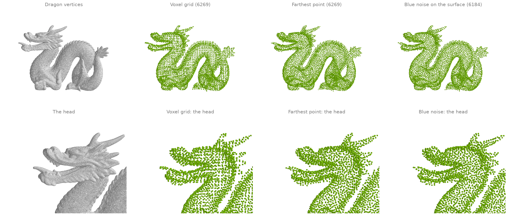
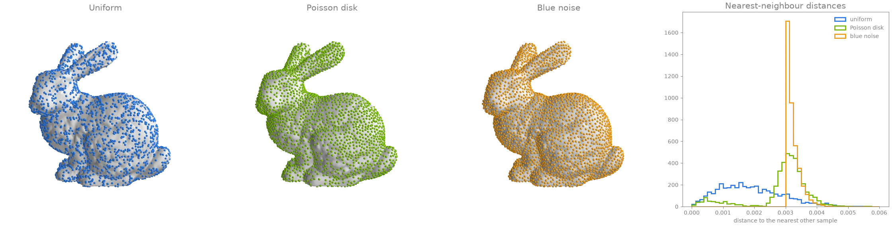
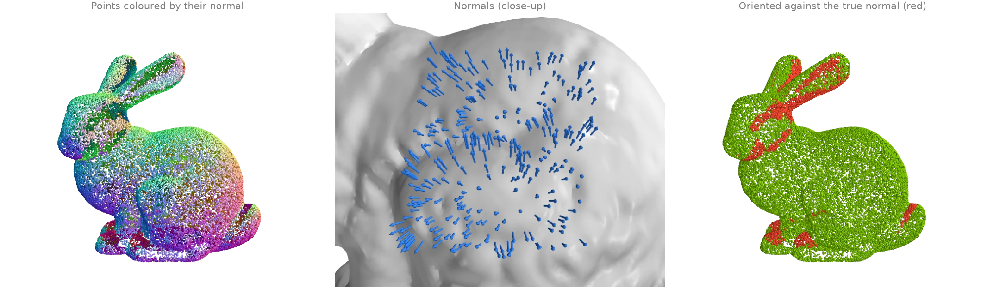
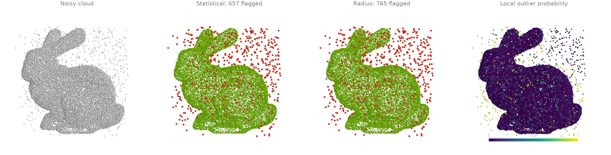
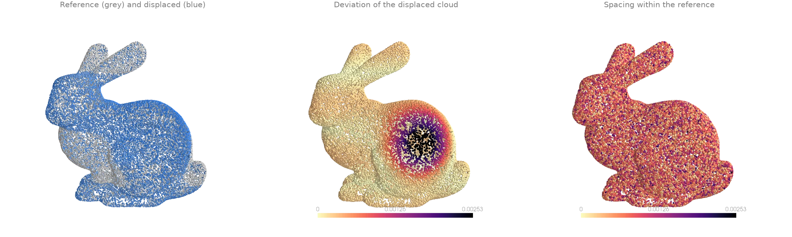
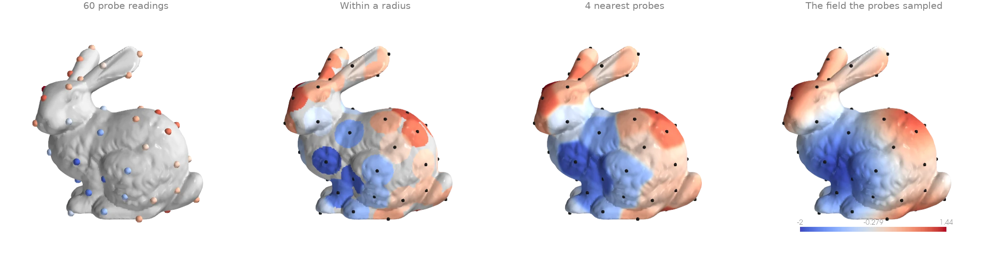
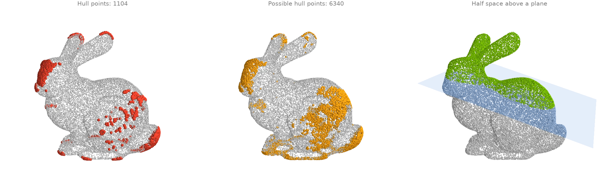

Point clouds
Down-sampling, surface sampling, normal estimation, outlier removal and interpolation.
Down-sampling: voxel grid, farthest point and blue noise
Three ways to thin the dragon's 437 000 vertices to a few thousand points.
voxel_down_sample averages the points in each occupied
cell of a grid; farthest_point_sample greedily picks
the point farthest from all picked so far, for an exact count with even coverage; and
sample_surface_blue_noise draws new points on
the mesh surface, no two closer than a radius.
import ordito as od
from examples import data
vertices, faces = data.load("dragon", device)
voxel = od.voxels.voxel_down_sample(vertices, 0.004)
farthest = vertices.numpy()[od.points.farthest_point_sample(vertices, voxel.shape[0]).numpy()]
blue, _ = od.sample.sample_surface_blue_noise(vertices, faces, radius=0.0027, seed=1)
print(f"{vertices.shape[0]} input points")
print(f"voxel grid: {voxel.shape[0]}, farthest point: {farthest.shape[0]}")
print(f"blue noise: {blue.shape[0]}")
437645 input points
voxel grid: 6269, farthest point: 6269
blue noise: 6184

Modelled on: Open3D: voxel down-sampling · PyVista: farthest point sampling · pytorch3d: sample_farthest_points
Surface sampling: uniform, Poisson disk and blue noise
sample_surface draws points uniformly by area, which leaves
clumps and gaps; sample_surface_poisson_disk
draws five times as many and eliminates the most crowded ones until the requested count
remains, so the same number of points covers the surface more evenly;
sample_surface_blue_noise instead takes a
radius and guarantees that no two samples are closer than it. The histogram of each sample's
distance to its nearest neighbour
(nearest_neighbor_distance) shows the
difference: the uniform draw spreads down to zero, the elimination pulls most gaps towards
the typical spacing, and blue noise has a hard floor at its radius.
import numpy as np
import ordito as od
from examples import data
vertices, faces = data.load("bunny", device)
uniform, _ = od.sample.sample_surface(vertices, faces, 4000, seed=1)
poisson, _ = od.sample.sample_surface_poisson_disk(vertices, faces, 4000, seed=1)
blue, _ = od.sample.sample_surface_blue_noise(vertices, faces, radius=0.003, seed=1)
gap_uniform = od.neighbors.nearest_neighbor_distance(uniform).numpy()
gap_poisson = od.neighbors.nearest_neighbor_distance(poisson).numpy()
gap_blue = od.neighbors.nearest_neighbor_distance(blue).numpy()
for name, gap in (("uniform", gap_uniform), ("Poisson", gap_poisson), ("blue", gap_blue)):
median, smallest = np.median(gap), gap.min()
print(f"{name:>8}: {len(gap)} samples, gap median {median:.5f}, min {smallest:.5f}")
uniform: 4000 samples, gap median 0.00177, min 0.00003
Poisson: 4000 samples, gap median 0.00311, min 0.00003
blue: 4016 samples, gap median 0.00316, min 0.00300

The Poisson-disk histogram keeps a small tail of near-coincident pairs, about 2 % of the samples closer than a tenth of the typical spacing. Weighted sample elimination should remove the most crowded points first, so that tail is unexpected; use the blue-noise sampler when a hard minimum spacing matters.
Modelled on: Open3D: mesh sampling · libigl 810 · PyMeshLab: Poisson-disk sampling
Normal estimation
A bare point cloud has no normals; estimate_normals fits
a plane to each point's neighbourhood (here its 16 nearest neighbours from
query_nearest) and takes the plane's normal. The sign is
a convention, not a measurement: by default each normal is turned away from the cloud's
centroid, which is right on most of the bunny and wrong where the surface folds back towards
the centre (red, compared with the exact normals of the surface the cloud was sampled from).
import numpy as np
import ordito as od
from examples import data
points = data.load_points("bunny_cloud", device)
neighbours, _ = od.neighbors.query_nearest(points, points, k=16)
normals = od.points.estimate_normals(points, neighbours)
# Compare with the exact normals of the surface the cloud was sampled from.
cosine = np.sum(normals.numpy() * data.cloud_normals("bunny_cloud"), axis=1)
angle = np.degrees(np.arccos(np.clip(np.abs(cosine), 0.0, 1.0)))
print(f"median angle to the true normal (ignoring sign): {np.median(angle):.2f} degrees")
print(f"flipped relative to the true normal: {(cosine < 0).mean():.1%} of points")
median angle to the true normal (ignoring sign): 4.15 degrees
flipped relative to the true normal: 9.9% of points

Modelled on: Open3D: vertex normal estimation · pytorch3d: estimate_pointcloud_normals
Outlier removal: statistical, radius and probabilistic
A jittered scan of the bunny with 900 stray points scattered through its bounding box. Three detectors, all from neighbourhood statistics:
statistical_outlier_maskflags points whose mean distance to theirknearest neighbours is far above the cloud's average;radius_outlier_maskflags points with too few neighbours within a fixed radius;outlier_probabilityscores each point by how stretched its neighbourhood is relative to its neighbours' (Local Outlier Probability).
import numpy as np
import ordito as od
from examples import data
points = data.load_points("noisy_cloud", device)
neighbours, distances = od.neighbors.query_nearest(points, points, k=20)
statistical = od.points.statistical_outlier_mask(distances, std_ratio=2.0).numpy()
radius = od.points.radius_outlier_mask(points, radius=0.004, min_neighbors=4).numpy()
probability = od.points.outlier_probability(neighbours, distances).numpy()
stray = np.arange(points.shape[0]) >= 30_000 # the input's last 900 points are the strays
for name, flagged in (
("statistical", statistical),
("radius", radius),
("LoOP > 0.8", probability > 0.8),
):
print(f"{name:>11}: flags {flagged.sum()}, of which {(flagged & stray).sum()} strays")
statistical: flags 657, of which 657 strays
radius: flags 765, of which 765 strays
LoOP > 0.8: flags 402, of which 402 strays

Modelled on: Open3D: point cloud outlier removal · PyMeshLab: select outliers
Cloud-to-cloud distance
Two scans of the same bunny, the second pushed outwards by a bump on its flank and a gentle
ripple. query_nearest with k=1 finds, for every point
of the second cloud, its nearest point in the first and the distance to it: a per-point
deviation map with no mesh in sight. For one cloud against itself,
nearest_neighbor_distance gives each point's
spacing to its closest other point, the noise floor such a comparison sits on.
import numpy as np
import ordito as od
from examples import data
reference = data.load_points("bunny_cloud", device)
displaced = data.load_points("bunny_cloud_displaced", device)
_, distance = od.neighbors.query_nearest(reference, displaced, k=1)
spacing = od.neighbors.nearest_neighbor_distance(reference)
print(f"deviation: median {np.median(distance.numpy()):.5f}, max {distance.numpy().max():.5f}")
print(f"spacing of the reference cloud: median {np.median(spacing.numpy()):.5f}")
deviation: median 0.00022, max 0.00287
spacing of the reference cloud: median 0.00065

Modelled on: Open3D: point cloud distance · PyVista: distance between point clouds
Interpolating sparse samples onto a surface
A field measured at only 60 probe points, spread over the bunny by
farthest_point_sample, is carried onto every vertex
by interpolate_from_points: a
Gaussian-weighted mean of the nearby probes. With a radius footprint, vertices farther than
the radius from every probe get the null_value (grey); with k nearest probes every vertex
gets a value, however far its probes are.
import numpy as np
import warp as wp
import ordito as od
from examples import data
vertices, _ = data.load("bunny", device)
probes = vertices.numpy()[od.points.farthest_point_sample(vertices, 60).numpy()]
readings = np.sin(40.0 * probes[:, 0]) + np.cos(40.0 * probes[:, 1]) # the "measurement"
source = wp.array(probes, dtype=wp.vec3, device=device)
values = wp.array(readings, dtype=wp.float32, device=device)
by_radius = od.interpolation.interpolate_from_points(
source, values, vertices, radius=0.015, null_value=float("nan")
)
by_neighbours = od.interpolation.interpolate_from_points(
source, values, vertices, radius=0.015, k=4
)
print(f"vertices with no probe within the radius: {np.isnan(by_radius.numpy()).sum()}")
vertices with no probe within the radius: 9266

Modelled on: PyVista: interpolate
Convex-hull points and half-space tests
Which points of the cloud lie on its convex hull?
convex_subset_mask marks the points that are extreme
along some sampled direction: every one is on the hull, and more directions find more of
them. convex_superset_mask answers the other way
round, discarding only points provably inside, so every hull vertex survives.
half_space_mask is the building block: the points strictly
on one side of a plane. ordito selects hull points only; it does not build the hull's
triangle mesh.
import warp as wp
import ordito as od
from examples import data
points = data.load_points("bunny_cloud", device)
on_hull = od.points.convex_subset_mask(points, n_directions=4096).numpy()
candidates = od.points.convex_superset_mask(points).numpy()
upper = od.points.half_space_mask(
points, wp.vec3(0.3, 1.0, 0.0), plane_origin=wp.vec3(0.0, 0.11, 0.0)
).numpy()
print(f"{on_hull.sum()} points certified on the hull (subset)")
print(f"{candidates.sum()} points that may be on it (superset), of {points.shape[0]}")
print(f"{upper.sum()} points above the plane")
1104 points certified on the hull (subset)
6340 points that may be on it (superset), of 30000
9513 points above the plane

Checked against an exact hull (scipy.spatial.ConvexHull, 1564 vertices on this cloud): all
1104 points of the subset are hull vertices, and every hull vertex is among the superset's
candidates. Convex-hull meshing is not part of ordito.
Modelled on: Open3D: convex hull · trimesh: convex